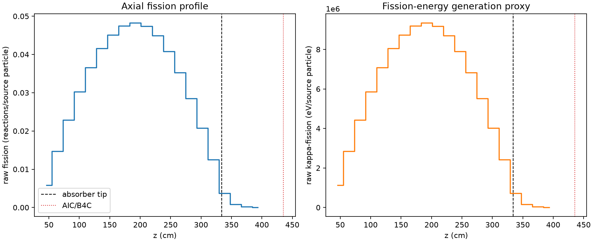
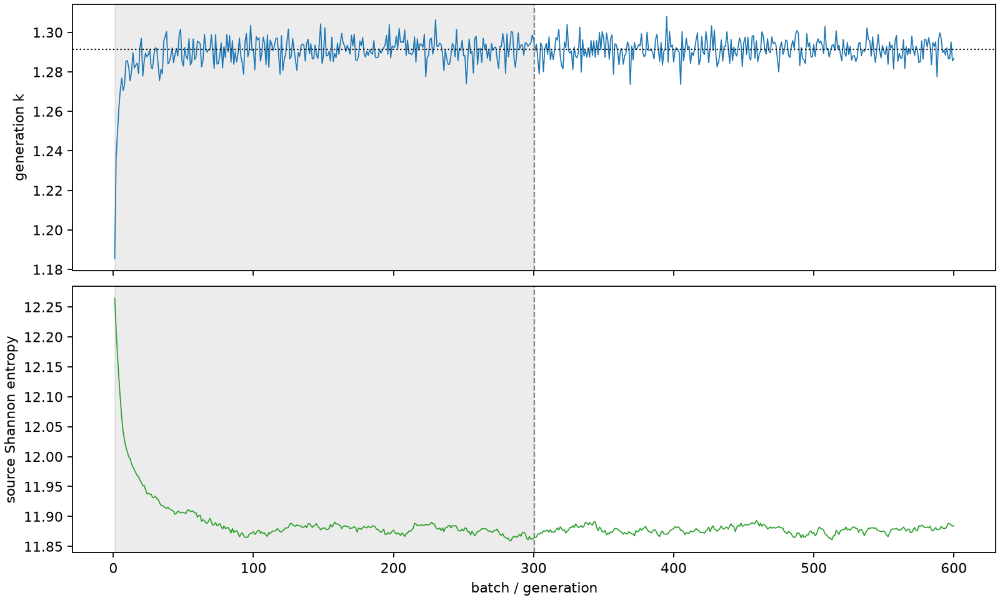

| field | value |
|---|---|
| experiment | V2-STAGE_256_OGRENCI_02-0015 |
| k | 1.2913655491218847 |
| MC standard error | 0.00019602398742974656 |
| seconds | 956.6616900970039 |
| acceptance | not_assessed |
| convergence | review_required |
Completed is output integrity only; physical and statistical review required. Zero tallies do not prove zero production or zero uncertainty.
| diagnostic | value |
|---|---|
| geometric fuel voxels | 5280 |
| zero fission tally voxels | 0 |
| low signal fuel voxels | 252 |
| low signal fission share | 6.864464744809916e-05 |
| low signal kappa share | 6.867260626589626e-05 |
| important fission share | 0.9500977740478188 |
| previous filter included | 5028 |
| duration estimate s | 1562.5173488400023 |
| actual minus estimate s | -605.8556587429985 |
| fission relative MC error | statistics |
|---|---|
| all_geometric_fuel | {"voxels": 5280, "positive_mean_voxels": 5280, "zero_mean_voxels": 0, "undefined_relative_error_voxels": 0, "median": 0.010230457677510024, "p95": 0.15701357132090088, "maximum": 0.3995685711573915} |
| low_signal | {"voxels": 252, "positive_mean_voxels": 252, "zero_mean_voxels": 0, "undefined_relative_error_voxels": 0, "median": 0.2502848940873723, "p95": 0.33616196290954264, "maximum": 0.3995685711573915} |
| important_95pct | {"voxels": 3635, "positive_mean_voxels": 3635, "zero_mean_voxels": 0, "undefined_relative_error_voxels": 0, "median": 0.00893591426770327, "p95": 0.013501360502562204, "maximum": 0.016315945017923824} |
| outside_previous_filter | {"voxels": 252, "positive_mean_voxels": 252, "zero_mean_voxels": 0, "undefined_relative_error_voxels": 0, "median": 0.2502848940873723, "p95": 0.33616196290954264, "maximum": 0.3995685711573915} |
| kappa_fission relative MC error | statistics |
|---|---|
| all_geometric_fuel | {"voxels": 5280, "positive_mean_voxels": 5280, "zero_mean_voxels": 0, "undefined_relative_error_voxels": 0, "median": 0.010219928154524945, "p95": 0.15673926265111351, "maximum": 0.399227113099442} |
| low_signal | {"voxels": 252, "positive_mean_voxels": 252, "zero_mean_voxels": 0, "undefined_relative_error_voxels": 0, "median": 0.24978105564162073, "p95": 0.3353975422095457, "maximum": 0.399227113099442} |
| important_95pct | {"voxels": 3635, "positive_mean_voxels": 3635, "zero_mean_voxels": 0, "undefined_relative_error_voxels": 0, "median": 0.008926123060108107, "p95": 0.013486628148287116, "maximum": 0.016297964391136815} |
| outside_previous_filter | {"voxels": 252, "positive_mean_voxels": 252, "zero_mean_voxels": 0, "undefined_relative_error_voxels": 0, "median": 0.24978105564162073, "p95": 0.3353975422095457, "maximum": 0.399227113099442} |
| axial bin | fission share | kappa-fission share |
|---|---|---|
| 1 | 0.010984313304794484 | 0.010984748778633162 |
| 2 | 0.027859569422357795 | 0.027859481989671687 |
| 3 | 0.04339175339131759 | 0.043391674244788424 |
| 4 | 0.05728705319894654 | 0.05728677315519954 |
| 5 | 0.06937069689842286 | 0.0693705549455935 |
| 6 | 0.07885019209664823 | 0.07884984494094878 |
| 7 | 0.08552678533076394 | 0.08552667248309942 |
| 8 | 0.08997461944040143 | 0.08997445696776091 |
| 9 | 0.09140965069212874 | 0.09140962519659272 |
| 10 | 0.0898842163063507 | 0.08988389282324731 |
| 11 | 0.08518312898403907 | 0.08518280291703799 |
| 12 | 0.0773034753085292 | 0.07730332810627828 |
| 13 | 0.06689752617686545 | 0.06689741822283032 |
| 14 | 0.0540015535376532 | 0.054001562812395605 |
| 15 | 0.039284912051783236 | 0.03928473846169784 |
| 16 | 0.023693241491172173 | 0.02369315347237924 |
| 17 | 0.007125848465411391 | 0.0071271518111572256 |
| 18 | 0.0015291296004086986 | 0.0015296223912053142 |
| 19 | 0.00036987276542506094 | 0.0003700054045732213 |
| 20 | 7.246153658025848e-05 | 7.249087490947762e-05 |
Histories include the inactive-to-active transition at batch 300. kappa-fission approximates fission energy production, not total heat deposition.

